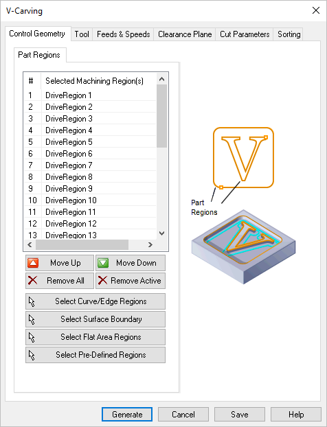

Control Geometry refers to the part geometry that controls the current operation. 2 Axis operations can use 2D and even 3D curves and surface edges as Control Geometry. For 2 Axis operations, Control Geometry is divided into three possible categories depending on the operation type: Part Regions, Avoid Regions and Start Points. The Control Geometry tab has sub-tabs for selecting each of these categories of geometry from your part.
|
Note: Some region types are not supported by all operation types. |
|||||||||||||||||||||||||||||||||||||||||||||||||||||
 Dialog Box: Control Geometry tab, V-Carving, 2 Axis Part Regions tab The Part Regions tab displays in all 2½ Axis and some 3 Axis operations. It is used to drive the tool during the operation. Use one of the Select... buttons in this dialog to add Part Regions to the Selected Machining Region(s) list. See Select Part/Containment Regions for more information. Avoid Regions tab The Avoid Regions tab lists the geometry (i.e., Regions) to be avoided by the cutter during the current Mill operation. The outer diameter of the tool will not enter this region. Note: This feature is not available in Xpress configuration. See Avoid Regions for more information. This tab is available on the following operation dialogs: Facing, 2½ Axis, Pocketing, 2½ Axis, Profiling, 2½ Axis Move Up This button moves the selected item up (i.e., higher) in the list. Items are machined in the order listed. Move Down This button moves the selected item down (i.e., lower) in the list. Items are machined in the order listed. Remove All This button moves the selected item down (i.e., lower) in the list. Items are machined in the order listed. Remove Active Pick this button to Remove the selected Active region from the list. You can select multiple Regions from the list using the Ctrl key and then pick this button to remove them all. The geometry itself is not deleted from the part model. Select Curve/Edge Regions Pick this button and the dialog will minimize, prompting you to make a selection from your part. You can select curves or face edges. After completing the selection, the dialog will re-appear with your Region selections listed. Select Surface Boundary Pick this button and the dialog will minimize, prompting you Select surface for boundary. You can select one or more part surfaces. After completing the selection, the dialog will re-appear with each surface edge boundary listed in the Selected Machining Region(s) list. Select Flat Area Regions Pick this button and you are prompted to make a selection from your part. You can select flat planar face geometry. After completing the selection, the dialog will re-appear with your region selections listed. Select Pre-Defined Regions If you pick this button, the Select Pre-defined Machining Regions dialog will display, allowing you to select one or more Regions. This operation dialog will then re-appear with your region selections listed. Pre-Defined Regions can be created using the options on the Regions tab of the Machining Objects Browser. See Predefined Machining Regions for more information. |